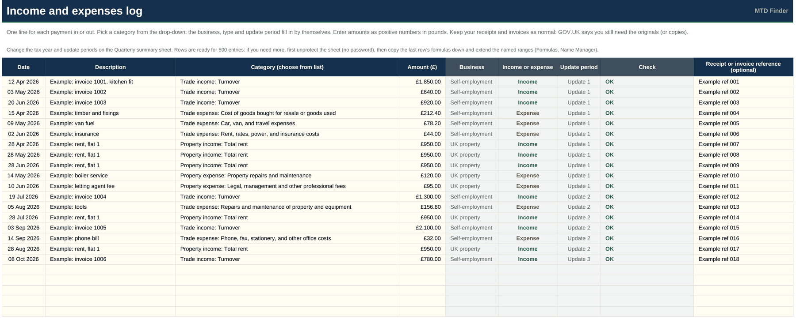
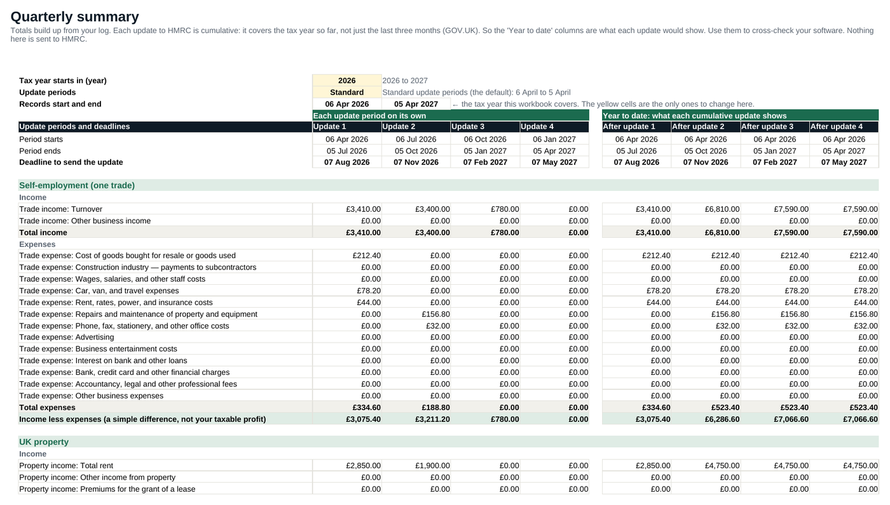
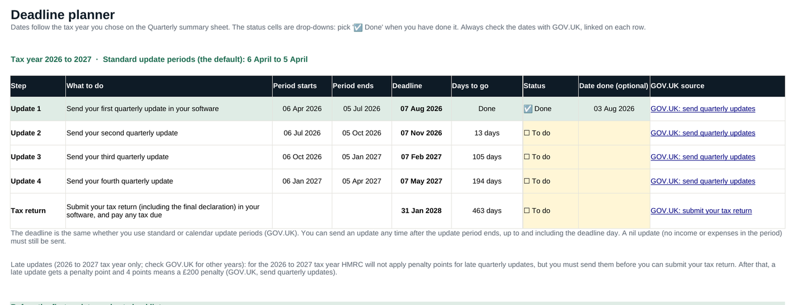
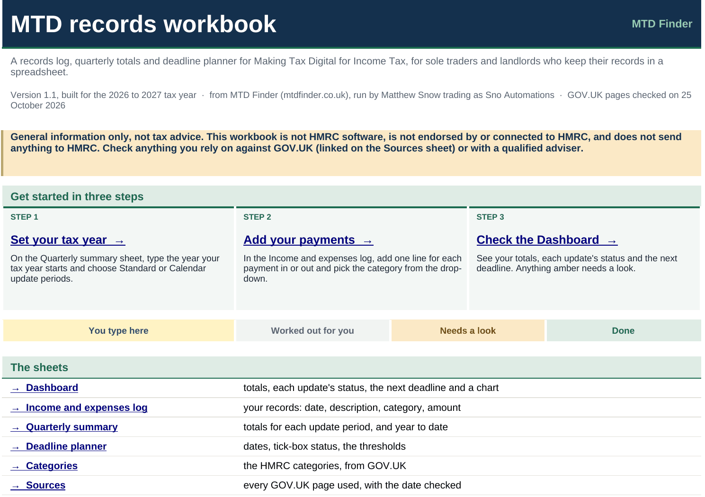

Keep your MTD records straight, all year
A spreadsheet that totals your income and expenses for each quarterly update, and tracks every MTD deadline. For sole traders and landlords who keep their records in a spreadsheet.
Quarterly update dates: updates are due by 7 August, 7 November, 7 February and 7 May. If you're already in MTD and use standard update periods, your next one covers 6 April to 5 October and is due by 7 November 2026 (GOV.UK (opens in new tab)). Each update covers the tax year so far. Your own periods depend on your situation, so check them on GOV.UK.
What you get
- Income and expenses log. Date, description, category and amount. Categories are the ones GOV.UK lists for self-employment and UK property.
- Quarterly summary. Totals for each update period, plus year to date, because each update covers the tax year so far.
- Deadline planner. 7 August, 7 November, 7 February, 7 May and the 31 January tax return, with a tick-box status and a GOV.UK link on every date.
- Standard or calendar update periods. Switch with one cell.
- Start here and Sources sheets. How to use it, what it isn't, and every GOV.UK page it relies on, with the date we checked.
It's one file, with ordinary spreadsheet formulas and no macros. The formula cells are locked, with no password, so they can't be overwritten by accident.
Tested in LibreOffice Calc only. We haven't yet tested it in Microsoft Excel or Google Sheets, so the drop-downs, colours and links may behave differently there.
Screenshots
These are screenshots of the workbook itself. The figures are made-up examples, and your copy opens empty.




Who it's for
- Sole traders and landlords who keep their records in a spreadsheet.
- People who plan to use bridging software and want tidy records and a cross-check.
- Anyone who wants all the MTD dates in one place.
Who it isn't for
- Anyone who wants the file itself to send updates to HMRC. It can't.
- Foreign property, and the simpler options GOV.UK describes for jointly let property, retailers and low-turnover businesses. Use your software or an adviser.
- More than one sole trader business in one file. GOV.UK says each needs its own records, so use a separate copy for each.
What it isn't
- It doesn't connect to HMRC and doesn't submit anything.
- It isn't software on HMRC's list, and it isn't approved, endorsed or recommended by HMRC. HMRC doesn't recommend any product.
- It isn't tax advice. It doesn't work out your tax or tell you what you can claim.
- We can't promise it works with every bridging product.
To actually send your updates, you need compatible software. Compare every HMRC-listed product in the software finder, or read bridging software, explained. GOV.UK: choose the right software (opens in new tab).
The workbook is our own product. It isn't one of the software finder's listings, and sponsorship has no effect on this page or the workbook.
Price and delivery
£12 in total. We're not VAT registered, so no VAT is added. It's a one-off payment, with no subscription. Paid by card through Stripe, which collects your card details directly. We never see your full card number. Sold to buyers in the UK only.
It's a digital download: a single .xlsx file. Delivery: we email the file to the address you give at checkout as soon as we see your payment. The email comes from MTD Finder (hello@mtdfinder.co.uk), and if you reply it comes to that same address. It's sent automatically and we aim to get it to you within a few hours, but we can't guarantee a time. If it hasn't arrived, check your spam folder, then email hello@mtdfinder.co.uk and we'll send it again.
Tested in LibreOffice Calc only. We haven't yet tested it in Microsoft Excel or Google Sheets.
Your 14 day right to cancel
You normally have 14 days to cancel an online purchase. A digital download is different. GOV.UK says a seller can only take that right away if the buyer confirms before they get the content that they know they'll lose it, and agrees to the content being supplied before the 14 days are up, and the seller repeats this in the confirmation of the contract. GOV.UK: online selling (opens in new tab). So:
- At checkout, Stripe asks you to tick a box before you can pay. It says: “I want the workbook emailed to me as soon as you receive my payment, before my 14-day cancellation period ends. I understand that once it has been sent to me I lose my right to cancel. This doesn't affect my legal rights if the file is faulty or not as described.” If you don't tick it, you can't buy.
- Our confirmation email, sent with the file from MTD Finder, repeats what you agreed to, with the price, our address and how to contact us.
Your legal rights
This doesn't affect your statutory rights. Under the Consumer Rights Act 2015 (opens in new tab), digital content must be of satisfactory quality, fit for purpose and as described. If the file is faulty or isn't as described, email us and we'll fix it or refund you.
Who you're buying from
Matthew Snow trading as Sno Automations. Business address: The Bristol Office, 2nd Floor, 5 High Street, Westbury-on-Trym, Bristol BS9 3BY. Questions, problems or complaints: hello@mtdfinder.co.uk. See our terms and privacy policy.
General information only, not tax advice. GOV.UK pages checked on 25 October 2026.
Frequently asked
Does the workbook send my quarterly updates to HMRC?
No. It doesn't connect to HMRC or submit anything. HMRC says you need compatible software to send quarterly updates. GOV.UK (opens in new tab), GOV.UK: choose the right software (opens in new tab).
Can I keep using a spreadsheet for MTD?
Yes, but you'll still need software that links to your spreadsheet, sometimes called bridging software. That is how you send quarterly updates and submit your tax return. GOV.UK (opens in new tab). Browse them in our software finder and read our bridging software guide.
Will it work with my bridging software?
We can't promise that. Bridging products read spreadsheets in different ways, and we haven't tested this workbook with any particular one. Ask the supplier before you buy either. GOV.UK says that if you use more than one product, you need to digitally link your records. GOV.UK: create digital records (opens in new tab).
Does it work in Excel and Google Sheets?
We've tested it in LibreOffice Calc only. We haven't yet tested it in Microsoft Excel or Google Sheets, and features such as the drop-downs, colours and links may behave differently there. If that matters to you, please wait or email us first.
Can I cancel within 14 days?
Not once we've sent you the file, if you've agreed to that at checkout. You normally have 14 days to cancel an online purchase, but for a digital download you lose that right once it has been supplied to you, provided you ask us to supply it before the 14 days are up and acknowledge this before you pay. We ask you to tick a box at checkout and repeat it in your confirmation email. This doesn't affect your statutory rights if the file is faulty or isn't as described. GOV.UK: online selling (opens in new tab).
Is it approved or recommended by HMRC?
No. It isn't software on HMRC's list, and HMRC doesn't recommend any product or software provider. GOV.UK (opens in new tab).
What does each quarterly update cover?
The tax year so far, from the start of the tax year to the end of the update period, not just the last three months. The workbook shows these year-to-date totals next to each period's own totals. GOV.UK (opens in new tab).
Where do the categories come from?
They are the income and expense categories in GOV.UK's quarterly update direction, for self-employment and UK property. GOV.UK: quarterly update direction (opens in new tab).
Do I send an update if I had no income?
Yes. If you had no income or expenses in an update period, you must still send your quarterly update to tell HMRC. GOV.UK (opens in new tab).
How long should I keep my records?
GOV.UK says to keep digital records for at least 5 years after the 31 January submission deadline for the tax year, and to keep your original receipts and invoices (or copies) as you do now. GOV.UK (opens in new tab).
Which tax years does it cover?
You type the year your tax year starts in (it opens set to 2026 to 2027) and the dates follow. Update periods can be standard (6 April to 5 April) or calendar. Check each date on GOV.UK, linked in the workbook, before you rely on it.
Is this tax advice?
No. It's general information and a record-keeping tool. It doesn't work out your tax or tell you what you can claim. Ask HMRC or a qualified adviser about your own situation.